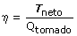

Máquina de Carnot Es una máquina ideal cuyo gas de trabajo recorre un ciclo en cuatro etapas: Expansión isoterma a temperatura T1, expansión adiabática hasta la temperatura T2, compresión isoterma y compresión adiabática hasta el estado de partida Si los procesos son reversibles el rendimiento de la máquina viene dado por:  El rendimiento de la máquina de Carnot es el máximo posible para cualquier máquina que trabaje entre las mismas temperaturas |